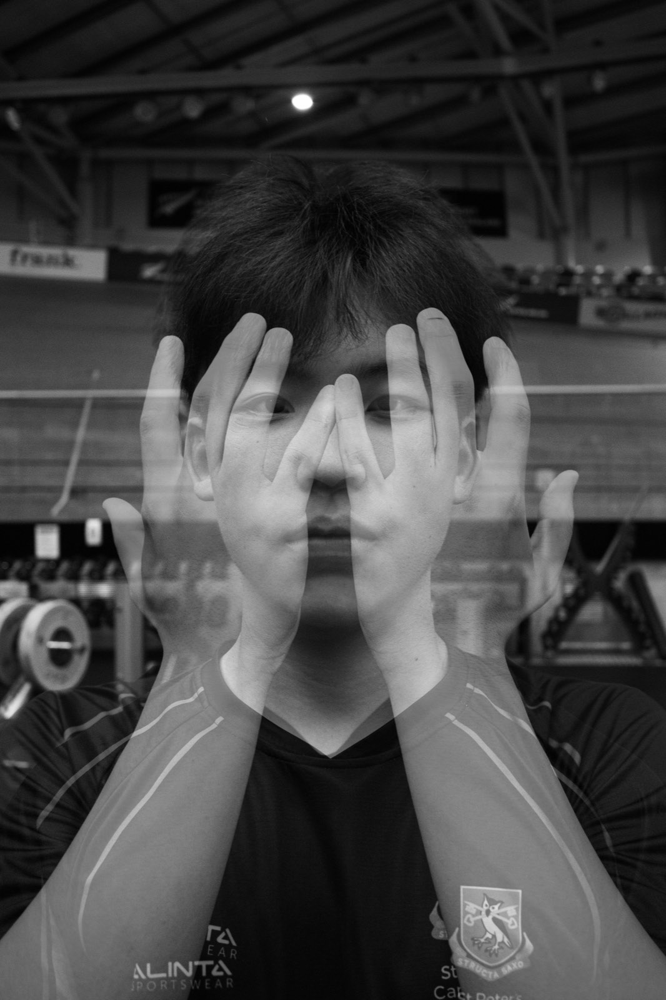
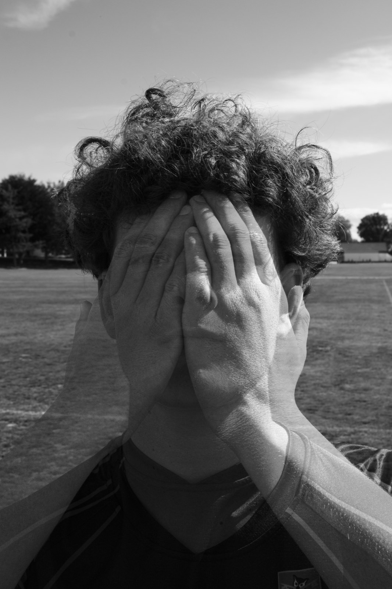
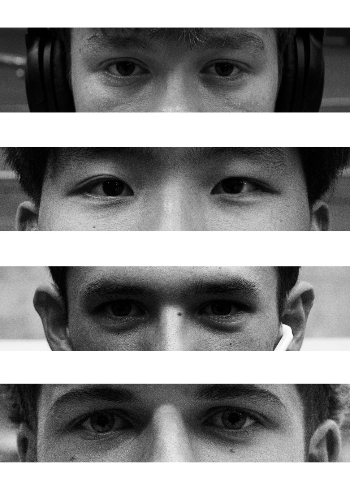
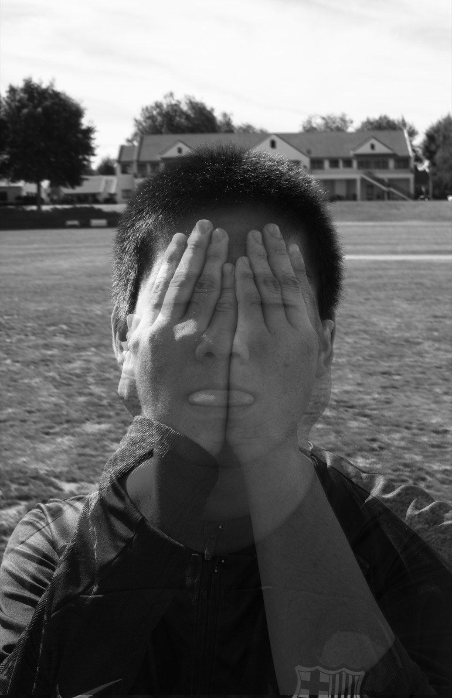
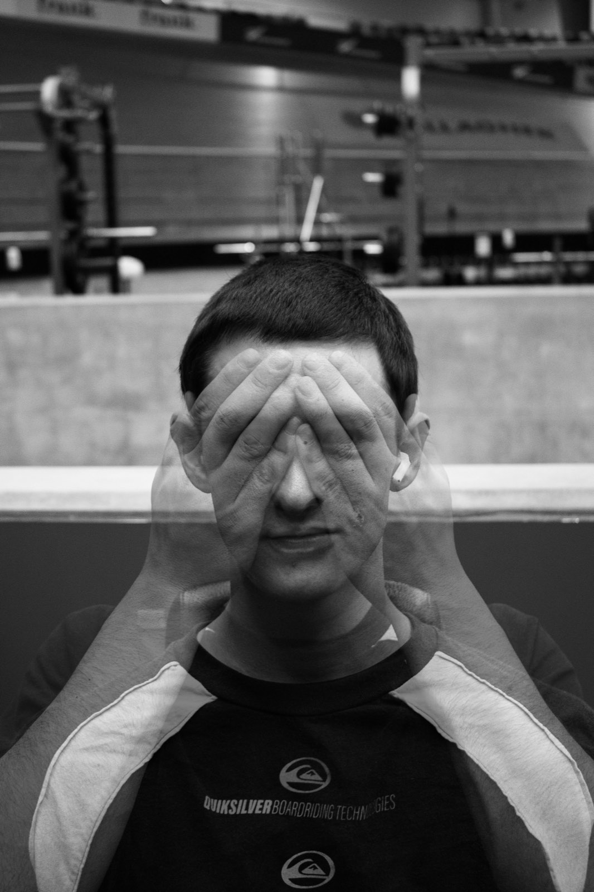
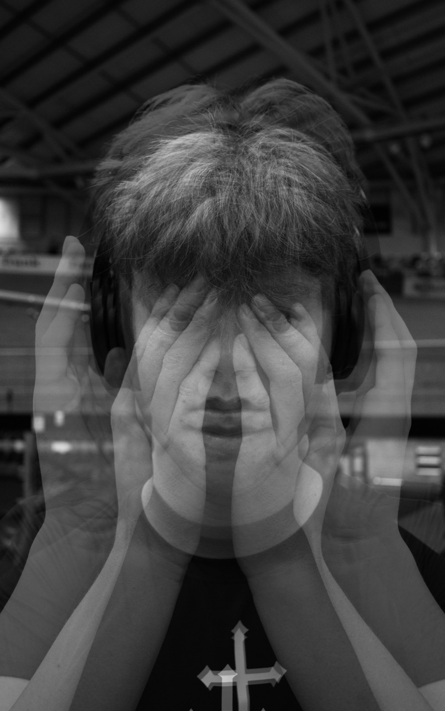
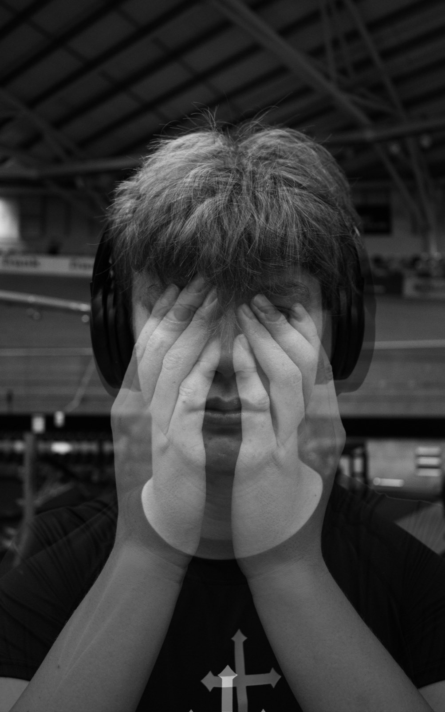
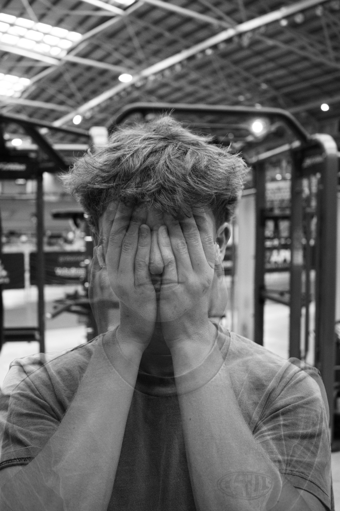

Double exposures where the hands arrive before the face does.
A single gesture — hands raised to the face — repeated across a group of subjects, and then doubled. Each frame overlays two exposures of the same person so the hands appear three or four times at once: covering the eyes, framing the jaw, drifting out past the edge of the head like an afterimage.
The result sits between a portrait and a record of movement. You can read the sitter, but you cannot pin down the instant, because several instants are present in the same frame.
Colour would separate the two exposures — skin tone against a green field, a red kit against grey bleachers — and the overlay would read as a mistake. Stripped to greyscale, the two frames share one tonal range, and the transparent hands read as deliberate rather than as a botched frame.


None of these were made in a studio. The backgrounds — a gym roof truss, a sponsor board, a treeline, a stand of empty seats — stay in the frame on purpose. Because the second exposure is semi-transparent, the background bleeds through the hands, so the setting is not a backdrop behind the subject; it is inside them.

Alongside the double exposures, the same subjects were cropped down to a band across the eyes and stacked into one tall sheet. With everything else removed — hair, jaw, kit, setting — the panels become almost interchangeable, which is the uncomfortable part. The series is about how little of a person survives a tight enough crop.




The complete series. Click any image to view it full screen; use the arrow keys to move through the set.

Happy to walk through the process, the outtakes, and what I'd do differently.